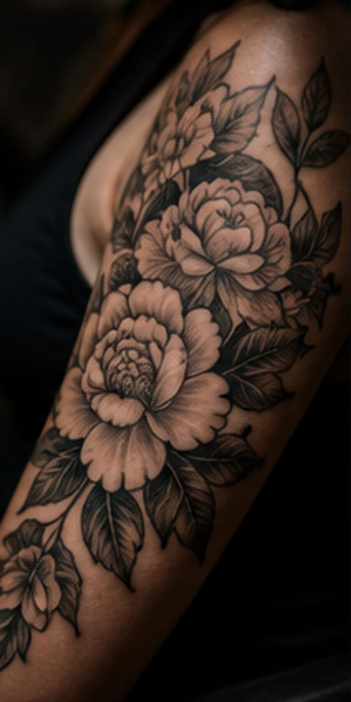
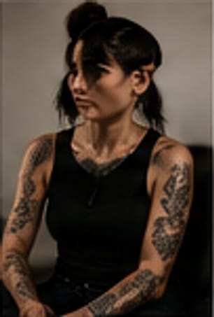
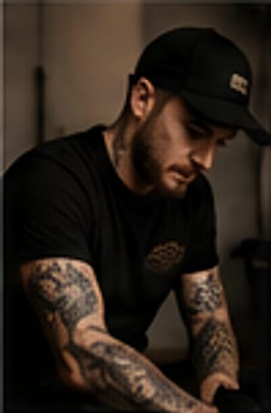
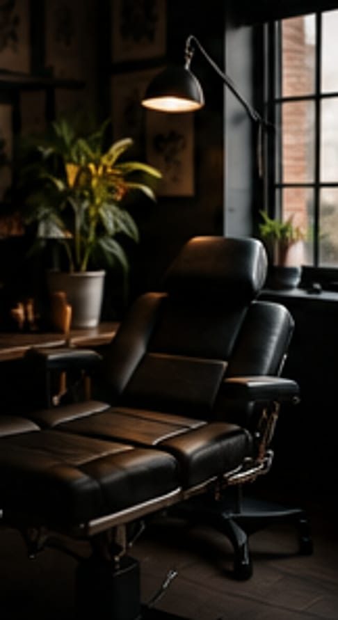
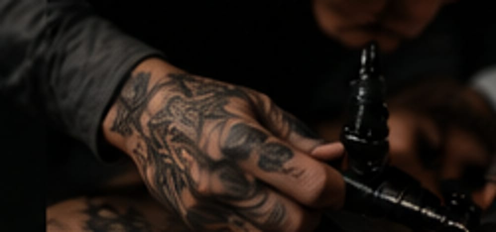

A tinta fica depois dos créditos.
Estúdio privado de tatuagem em Manchester. Realismo, blackwork e neotradicional, desenhados para o teu corpo e para mais ninguém.
Não fazemos tatuagens à pressa. Cada peça começa como um guião: a tua história, o sítio no corpo, a forma como a pele apanha a luz. Desenhamos, ensaiamos o stencil e só depois ligamos a máquina.
Trabalho recente
Continua a descer para correr a bobina.Arrasta para o lado. Toca numa imagem para a ver maior.
Seis géneros, uma direção
- RealismoRetratos, animais e texturas a preto e cinza.
- BlackworkPreto sólido, contraste máximo, peças que se leem ao longe.
- NeotradicionalContorno firme, cor rica e muito ornamento.
- Fine lineAgulha fina, desenho leve, peças pequenas.
- TradicionalLinhas grossas e cores sólidas que aguentam décadas.
- OrnamentalMandalas, pontilhado e simetria.

O elenco
Quatro artistas residentes. Se não sabes quem escolher, conta-nos a ideia e fazemos o casting por ti.
-

Mara Quinn
Fine line e ornamental
Agenda aberta em dezembro
Marcar com a Mara -
Callum Reid
Realismo a preto e cinza
Lista de espera de 8 semanas
Entrar na lista do Callum -
Inês Duarte
Neotradicional
Agenda aberta em novembro
Marcar com a Inês -

Reece Hollis
Tradicional e blackwork
Aceita walk-ins à sexta
Marcar com o Reece

Bastidores
Uma sala, uma cadeira, uma pessoa de cada vez. Sem montra, sem público, sem pressa.
- Higiene
- Agulhas e tintas de uso único, superfícies seladas, registo no Manchester City Council.
- Privacidade
- Sala fechada, ideal para costas, costela ou peças maiores.
- Tempo
- Reservamos 30 minutos para o stencil antes de começar.

Uma tatuagem é a única cena que não se pode cortar na montagem.
Do guião à rodagem
Nada é pago antes de aprovares o desenho e o orçamento.
Guião
Envias a ideia, o sítio no corpo, o tamanho e referências. Cerca de cinco minutos.
Storyboard
Em dois dias úteis recebes artista, orçamento e datas livres.
Ensaio
Depósito de £60 para guardar a data. Desenho pronto no dia, ajustado contigo.
Rodagem
Stencil, aprovação final e só depois a máquina. Levas o guia de cuidados para casa.
- Mínimo do estúdio
- £80
- Hora
- £130
- Dia inteiro (6 h)
- £650
- Depósito
- £60
Pedir marcação
Conta-nos a história. Quanto mais concreta, mais rápida é a proposta.
- Resposta em 2 dias úteis
- Consulta grátis e sem compromisso
- Ter a sáb, 11h–19h. Fechado domingo e segunda.